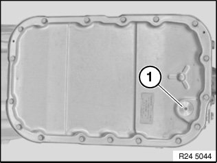
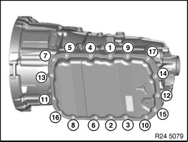
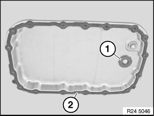
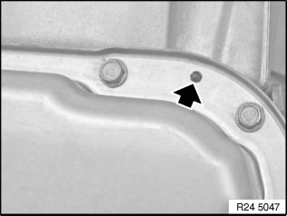

24 11 013 Removing and Installing/Sealing or Replacing Transmission Sump (GA6L45R)
24 11 013 Removing and installing/sealing or replacing transmission sump (GA6L45R)Important!
Remove transmission sump only after it has cooled down.
After completion of work, check transmission fluid level.
Use only the approved transmission fluid.
Failure to comply with this requirement will result in serious damage to the automatic transmission!
Recycling:
Catch and dispose of escaping transmission fluid.
Observe country-specific waste disposal regulations.
Necessary preliminary tasks:
Remove rear underbody protection.
Remove exhaust system bracket from transmission.

Remove oil drain plug (1).
Tightening torque: 24 11 6AZ.
Drain automatic transmission fluid.
Installation:
Replace oil drain plug.

Unscrew all bolts.
Remove transmission sump (1).
Installation:
Screw in bolts (1 to 17) in specified order until bolt heads make contact.
Tightening torque: 24 11 5AZ.

Clean sump magnet (1) and check for metal filings/borings.
Remove gasket (2) from transmission sump.
Clean sealing faces and groove with a cloth.
Insert new gasket in transmission sump groove.
Important!
Do not degrease transmission sump with cleaning agent.

Installation:
The gasket is correctly installed when it is engaged in the locating openings of the transmission sump.